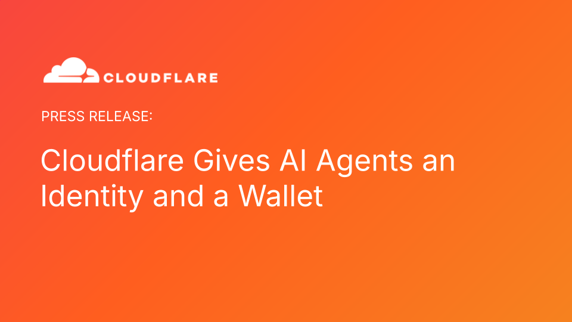
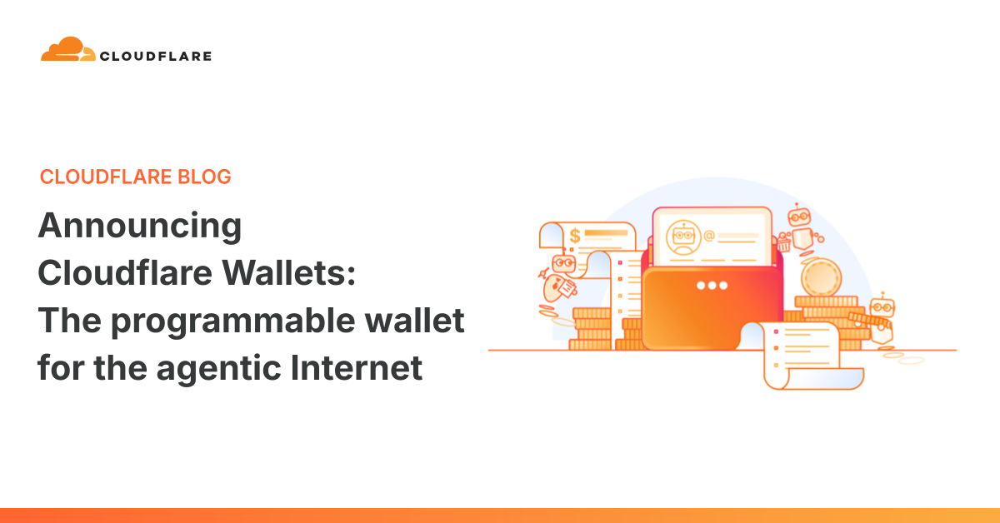

Cloudflare｜賦予 AI 智慧體身分與錢包：agentic commerce 的基礎設施成形

為什麼保存
這則 Cloudflare 官方新聞稿值得收錄，因為它把 AI agent 的討論從「能不能操作網頁、呼叫 API」推進到更底層的商務基礎設施：agent 要如何被辨識、被授權、被限制預算、替人類或組織付款，並讓賣方判斷這個 agent 背後究竟是可信任的客戶、企業，還是惡意濫用者。
換句話說，agentic commerce 不只是模型能力競賽；若 AI 智慧體要真的替人類購買 API、內容、資料或工具，它需要類似「身分證＋授權書＋可控信用卡」的機制。
官方新聞稿重點
Cloudflare 於 2026 年 8 月 4 日宣布推出 Cloudflare Wallets 與 cloudflare.pay，目標是為部署在 Cloudflare 上的 AI 智慧體提供兩個能力：
| 能力 | 官方說法 | 對 AI agent 工作流的意義 |
|---|---|---|
| 穩定身分 | Cloudflare 帳戶將取得唯一網址作為穩定 ID，並可把身分延伸到特定智慧體 | 接收端網站不只看到「又一個 bot」，而能看見請求是由哪個人類或組織授權。 |
| 可控支付 | Account Wallet 可管理穩定幣；Virtual Wallet 可指派給個別 agent | agent 可在預算、商家 allow list、單筆上限等限制內購買 API、內容或服務。 |
| 雙邊市場 | 搭配 Monetization Gateway，形成買方 agent 與賣方網站/API 的支付市場 | 賣方可向 agent 收款，買方 agent 可用 machine-native 的方式付款。 |
Cloudflare 執行長 Matthew Prince 在新聞稿中把這件事描述為：網際網路正從人類主導的瀏覽模式，轉向智慧體驅動的商務模式；當一個 agent 來到網站時，網站需要知道「是誰派它來的」。
Cloudflare Wallets：Account Wallet 與 Virtual Wallet
Cloudflare 官方部落格補充了更具體的產品結構：Cloudflare Wallets 會分成 Account Wallets 與 Virtual Wallets。
- Account Wallet：給 Cloudflare 帳戶擁有人與使用者使用，可加入資金、移除資金，並把部分支出權限委派給 agent 管理的 Virtual Wallet。
- Virtual Wallet：給 agent 使用，透過 API key 操作；agent 可在擁有人設定的權限內花費資金。
- 防護欄：可設定 allowance、allow list、maximum transaction size，讓 agent 有探索自由，但不至於失控超支。
部落格也舉例：若企業想給每位員工每週 100 美元的 AI inference 預算，可以由 Account Wallet 配置餘額，再建立各自的 Virtual Wallet；超出限制時，再由授權人員手動覆核。
cloudflare.pay：可讀的 agent 身分
cloudflare.pay 的核心不是單純付款網址，而是把 wallet 與 Cloudflare 帳戶連結，讓 agent 能選擇性宣告它是某個帳戶的 delegate。
Cloudflare 部落格舉例：研究 agent 可以住在 `research.example.cloudflare.pay` 這樣的可讀識別碼底下。對商家來說，它比一串不可讀 keypair 更容易理解，也更接近 DNS 把 IP 對應成人類可讀網址的邏輯。
這裡的關鍵觀念是：未知 agent 不一定不可信，但它可能需要更多驗證；已知 agent 則可被商家用不同規則處理。Cloudflare 也提到 Web Bot Auth 已能讓 agent 透過 keypair 註冊身分，而 Cloudflare Wallets 附帶的 ID 可讓這類 keypair 變得更可讀。
與 x402、Monetization Gateway 的關係
Cloudflare 的 Wallets 與前面的 Monetization Gateway、x402 protocol 形成一組完整拼圖：
- 賣方：網站、API、資料或內容可透過 Monetization Gateway 收款。
- 協定：x402 讓付款可以附著在 HTTP request 上，支援小額支付。
- 買方：AI agent 透過 Cloudflare Wallets / Virtual Wallets 付款。
- 身分：cloudflare.pay 讓 agent 可宣告背後的 Cloudflare 帳戶或組織。
這對 API 與內容服務的啟示很大：未來 agent 可能不必每次都繞回人類填表、輸入信用卡、領 API key，而是能以受限錢包低摩擦試用多個服務，再回報哪個最適合任務。

我會怎麼解讀
這則新聞不是單純「Cloudflare 也做錢包」，而是把 Cloudflare 在 bot management、developer platform、Workers、AI Gateway、Monetization Gateway 與 agent ecosystem 的位置串起來。
若 AI agent 未來大量代表人類或企業造訪網站，平台會遇到三個基本問題：
- Attribution：這個 agent 是誰派來的？
- Authorization：它被允許做什麼？
- Spending control：它可以花多少錢、向誰花、單筆上限是多少？
Cloudflare 的解法，是把這些問題包成「帳戶身分＋可委派錢包＋HTTP-native 小額支付」的基礎設施。這會讓 agent 從「會操作網頁的自動化腳本」更接近「有責任邊界的數位代理人」。
風險與限制
- 功能時程：新聞稿明確說完整錢包功能，包括資金存入、提取與發放 Virtual Wallet，將於未來數月陸續推出；目前可先預留 Cloudflare Wallet handle。
- 地區與合規：穩定幣、onramp/offramp、付款與收款會受地區、法規、KYC/AML 與 Cloudflare 服務條款影響，不能假設全球立即可用。
- 權限外洩：Virtual Wallet 透過 API key 操作，若 key 洩漏或 agent 被 prompt injection 操控，仍可能在預算上限內造成損失。
- allow list 品質：只限制商家清單不等於保證商家內容可靠；agent 購買 API、MCP Tools 或資料後，仍需要安全掃描與輸出審查。
- 前瞻性聲明：Cloudflare 新聞稿含證券法意義下的前瞻性聲明，產品能力、正式上線時間與可用性都可能變動。
延伸閱讀
- Cloudflare 官方新聞稿：https://www.cloudflare.com/zh-tw/press/press-releases/2026/cloudflare-gives-ai-agents-an-identity-and-a-wallet/
- Cloudflare Blog｜Announcing Cloudflare Wallets：https://blog.cloudflare.com/wallets/
- Cloudflare Blog｜Monetization Gateway：https://blog.cloudflare.com/monetization-gateway/
- cloudflare.pay：http://cloudflare.pay/